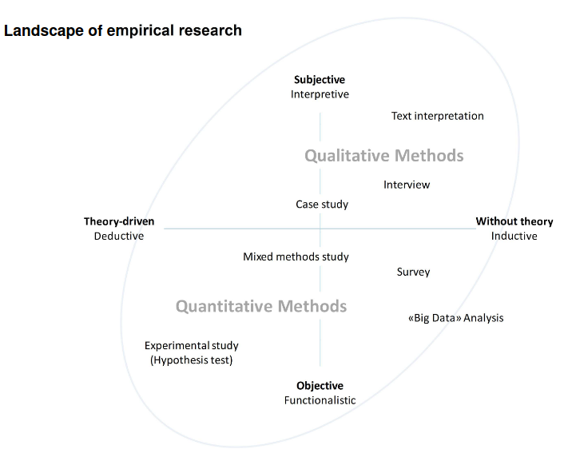
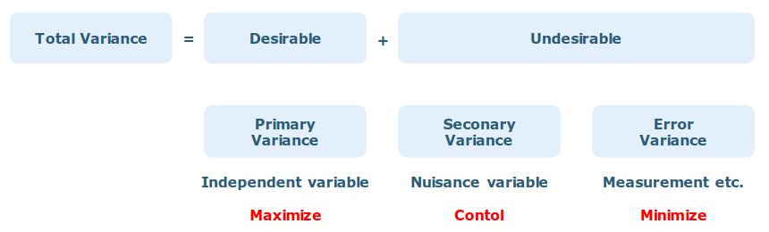
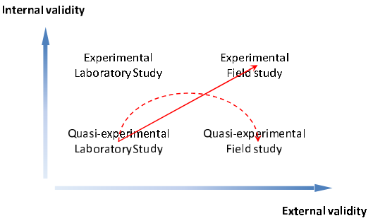
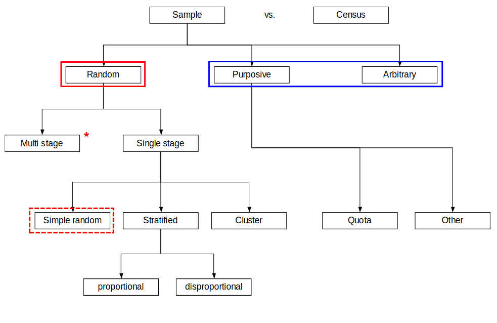
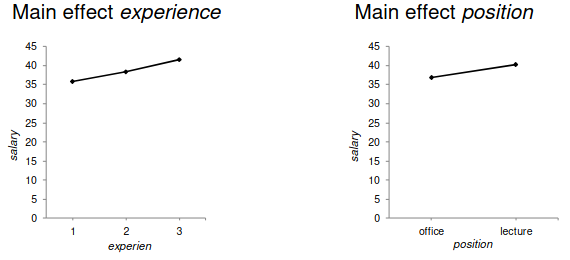
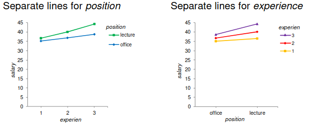
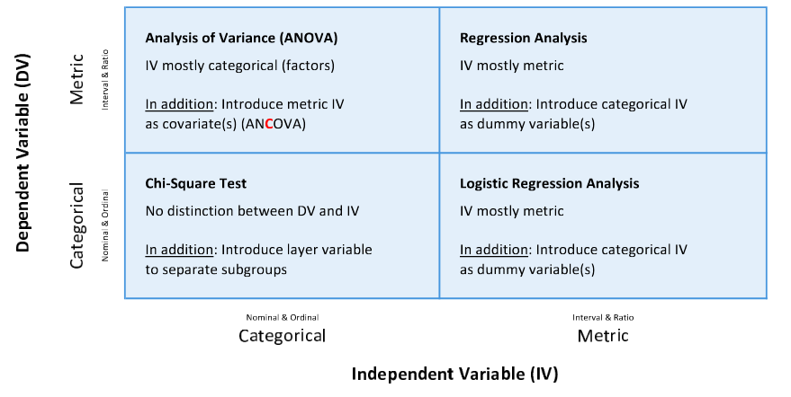
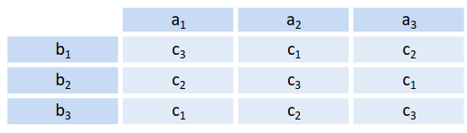
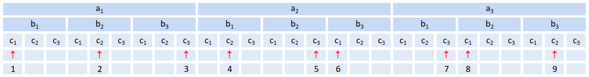

data <- rnorm(100) # 100 random numbers
View(data)
data_sample <- sample(data, 10, replace=FALSE) # Take 10 random sample from data
View(data_sample)Design of Experiments
Research Design
Observational vs. Experimental
The fundamental difference between observational studies and experimental research designs is that in the former, researchers simply observe and measure variables without actively intervening. In the latter, variables are purposefully manipulated to determine a cause-and-effect relationship.
Randomization
The effect and aim of randomisation is to eliminate selection bias and confounding factors, and to ensure comparability between groups at the start of the study (baseline data).
Confounder
Confounding occurs when a factor (confounder) that has not been investigated is associated with both the independent and dependent variables, causing a spurious correlation between them.
Blinding
The problem is distortion due to knowledge about the treatment. Blinding is a suitable technique for avoiding such distortions. It eliminates conscious and unconscious influences on the treatment result.
Types of blining
- Open: No blining
- Single-blind: Participants don’t know their group assignment (e.g., whether they’re receiving the real treatment or a placebo).
- Double-blind: Neither the participants nor the researchers administering the treatment know the group assignments.
- Triple-blind: Participants, researchers, and the data analysts are all unaware of the group assignments.
Principles
Introduction to scientific theory
Scientific Theory
Examines whether and how scientific knowledge can be obtained. It is a branch of philosophy that deals with the theory of scientific knowledge and scientific methods, as well as with research. It also analyzes the practices that generate scientific knowledge and examines the institutional and social contexts in which these take place.
Methodology
It focuses on the underlying considerations, decisions, and justifications of the approach used in scientific research projects. It provides the instructional framework on how to proceed in order to gain scientific knowledge. It does not comprise a strictly formal set of rules but offers a diverse and pragmatic set of choices that are linked to human action.
Research Methodes
Systematized procedures and approaches for obtaining knowledge.
Selection of positions held in scientific theory
- Classical rationalism: Reason precedes experience and there are so-called “innate” concepts of reason.
- Inductive empiricism: Findings are derived inductively based on observations and experiences.
- Logical positivism: The use of logic makes it possible to separate science from metaphysics.
- Critical rationalism: Findings are derived deductively based on observations.
- (Social) constructivism: Individuals construct their reality by relating their thinking and actions.
Note: Inductive empiricism and critical rationalism belong to empirical research.
What is empirical research?
Knowledge can be gained only through observation, experiment, and experience. Empirical research examines the environment by means of observation and experiment. There are many research methods for conducting observations and experiments:
- Interview
- Case study
- Survey study
- Experiment
Landscape of empirical research

Quantitative Methodes
Research that uses quantitative methods is designed around the principles of critical rationalism. The approach assumes that a theory can never be finally verified, it can only be falsified.
Descriptive statistics
- Describes the data to be analyzed.
- Is limited to a sample as a subset of the population.
- Does not allow for conclusions to be drawn about the population.
Inferential statistics
- For drawing conclusions about the population based on information obtained from a sample.
- Use statistical hypothesis tests, especially, as the main component.
Hypothesis Testing
Hypothesis testing is a statistical method used to determine if there is enough evidence in a sample of data to support a specific hypothesis about a population. It involves formulating a null hypothesis and an alternative hypothesis, analyzing sample data, and making a decision based on the results, often using a p-value to assess significance.
- Alternative hypothesis (\(H_A\)): Research hypothesis to be tested that postulates the presence of a certain effect (e.g. a difference) in the population.
- Null hypothesis (\(H_0\)): Postulates the opposite, namely the absence of an effect.
Research process
Phases
- Formulation of the research problem & study design
- Planning and preparation of the study
- Data collection
- Data Analysis
- Reporting
Measuring Instrument
A process that uses a given set of circumstances to define and specify subsequent research steps with a view to better understanding these circumstances.
Sampling procedure
A selection of cases derived from the population and compiled for research purposes results in statements as part of an empirical study. Sampling often involves people, but objects of all kinds (e.g., websites, newspaper articles, companies, countries) can also form a population. Sample surveys are typical of empirical social research. Only rarely are censuses used that examine all cases associated with the population.
Definition & properties of study design
The choice of a suitable research design determines the scientific quality of a study. The planning of the analysis depends on the research design.
Study types
- Descriptive study: Descriptive character. Suitable for forming hypotheses (Surveys).
- Analytical study: Identification and quantification of effects / verification of relationships. Not fully suitable for hypothesis testing (Cohot).
- Randomized controlled: Suitable for hypothesis testing (RCT).
Lecture 03: Introduction to Design of Experiments (DoE)
Cause and Effect
A trial / experiment is carried out to discover a cause-and-effect relationship in a process.
Terms
- Input: Trial objects, test objects, test persons, ect.
- Process: Process in which controllable and non-controllable factors influence the input.
- Output (aka. Dependet variable: DV): Input changed by the process, result of the test/experiment.
- Controllable factors (aka Independet variables: IV): Influencing factors whose strength can be adjusted within defined limits.
- Non-controllable factors: Influencing factors whose strength cannot be determined but that can be measured / cannot be determined and that cannot be measured.
Non-controllable factors
Non-controllable factors are also referred to as nuisance variables in a general context or nuisance factors in the context of blocking
Note: Blocking = arranging of experimental units in groups (blocks)
Causality in observational and experimental study designs
Observational studies cannot directly prove causality, but only show correlations or associations. Since the assignment is not random, there is always a risk that the results are distorted by unknown confounding factors.
Experimental studies (e.g. RCTs) can prove causality because they control for confounding factors through randomisation, thereby isolating the effect of the cause. They are the gold standard.
Variance
The variance describes the mean square deviation of the individual measured values from the empirical mean.
- Primary variance: Impact of (experimental) factors in an experiment on the change / variation of the output to be examined.
- Secondary variance: Variation of the output to be examined, caused by nuisance variables. Not in the focus of the study.
- Error variance: Variation caused by measurement errors and random processes.
Note: Secondary and error variances are grouped to the residual variance.
Variantion of Variance
The variance of the dependent variable (DV) (primary variance) should be attributed to the systematic variation of the independent variable (IV). The secondary variance should be controlled and the error variance minimized.

Maximizing the primary variance
- Relationship is linear: Selecting of extreme values in the IV.
- Relationship were curvilinear: Selecting optimal increments of IV.
- Relationship were unknown: Selecting as many increments of IV in the smallest steps as possible.
Control of the secondary variance
- Keeping constant: Keeping the experimental setup constant.
- Repetition: Several measurements are repeated on the same trial objects.
- Randomization: Trial objects are assigned randomly to Treatment and Control groups to eliminate systematic bias
- Blocking: Trial objects are grouped into homogeneous blocks based on one or more influential variables to reduce variability.
- Covariate adjustment: Nuisance variables are included as covariates in the statistical model to account for their effects.
Minimizing the error variance
- Reliable measurement setup: Standardization of the experimental conditions
- Sample size: Larger sample sizes reduce the impact of individual measurement errors
- Suitable analytical methods: Use of robust estimators to account for heterogeneous error variance
Properties of measurement instruments
- Objectivity: Objectivity of an instrument is given when the results are independent of personnel and calculation methods.
- Reliability: Reliability is the degree to which an instrument produces the same result each time under comparable conditions.
- Validity: Validity is the extent to which an instrument measures what was intended.
Lecture 04: Properties of DoE
Design of Experiments Types
Trial and error
Combination of parameters have no structure and are mixed randomly. No idea what factors influence how.
One-factor-at-a-time
Vary the first factor and then measure fuel consumption. Keep the setting with the lowest consumption and then vary the next factor. Easy to implement, but interaction between factors are not recognized. Research question is answered neither systematically nor exhaustively.
Full factorial design
Two levels (+/-) are defined per factor. All possible combinations of factor levels are varied. All main effects and all interactions can be determined. Can be used as a screening experiment to identify potentially important variables. The effort involved increases rapidly as the number of factors increases. Each additional factor doubles the number of combinations.
Profile Plot
Impact of the factors on the dependent variable \(x\). Based model:
\[ y = \beta_0 + \beta_1 x_1 + \beta_2 x_2 \dots + \beta_n x_n \]
Factorial design with interactions
Interactions can occur in experiments with two or more independent variables. An interaction of two factors means that the two factors interact in a complex way. If there is an interaction, the effect of one factor depends on the levels of the other factor. Interaction terms are written as multiplication.
- Two way interaction: \(x_1 \times x_2\)
- Three way interaction: \(x_1 \times x_2 \times x_3\)
\[ y = \beta_0 + \beta_1 x_1 + \beta_2 x_2 + \beta_3 x_1 \times x_2 \]
Full factorial designs
Generalization of two-level full factorial design with \(k\) factors and \(n\) levels. All possible factor combinations are varied.
\[ \text{combinations} = n^k \]
Fractional factorial designs
Only a (balanced) part of the possible combinations of factors are varied.
\[ \text{combinations} = n^{k-1} \]
Design
- Procedure: The factor levels are determined before the experiment
- Factor combinations: Only a part of the possible combinations of factors are selected
- Restrictions: In fractional factorial designs, interactions can only be partially measured because not all possible combinations of factor levels are tested.
- Advantages: The effort involved is significantly lower compared to full factorial designs
- Statistical analysis: As in the case of full factorial design, but without interactions
Quality criteria of experiments
Internal Validity
Exists when changes in dependent variables (DV) are attributed to independent variables (IV). Increases with decreasing impact of nuisance variables.
Population Validity
Degree to which the results of a study can be generalized from the sample to the whole population.
Situation Validity
Degree to which the findings of a study can be applied to different situations.
External Validity
Exists when experimental results from a sample can be generalized to the entire population. Increases with increasing naturalness.
Construct Validity
Effectiveness of the measurement methods in precisely capturing the intended construct
Relationship between Internal vs. External Validity

The lowest general level of validity is at the bottom left for the quasi-experimental laboratory study, and the highest is at the top right for the experimental field study. A well-controlled lab experiment may maximize internal validity by eliminating confounding variables.
Lecture 05: Sampling
Population
Set of all (potentially explorable) elements that have a common characteristic or a common combination of characteristics. The observation units (individuals, households, etc.) must be defined before the research start. In order to define the population, clear differentiation criteria must be formulated, so that for each observation unit it can be determined whether it is part of the population.
- Differentiation in geographical aspects
- Differentiation of temporal aspects (point in time or period)
- Differentiation in factual / content-related aspects
Generalizing from a sample to the population
The population is often very large or not fully accessible. The population can be defined but not identified.
Characteristics of a sample
A sample is a subset of all observation units and should reflect the relevant aspects of the population as accurately as possible. Three elements contribute to creating or describing representativeness:
- The sample is drawn randomly.
- Estimation procedure for generalizing from the sample to the population is reported.
- Accuracy is reported, which is influenced by the sample size, among other things
Point estimate of the mean
An “estimator” is a function that calculates a value.
- \(\bar{x}\): Mean of the sample
- \(\mu_0\): True mean in the population (generally unknown)
Important
The mean value x of a sample is an unbiased, efficient and consistent estimator of the true mean value in the population: \(\mu_0 = E(\bar{x})\)
Sampling methods
- Probabilistic (random) sampling procedures: Selecting elements based on a random mechanism
- Non-probabilistic (non-random, purposive, arbitrary) sampling procedures: Selection of the elements is not based on a random mechanism, but is made by certain decisions (purposive or arbitrary selection of elements)
Sampling Map

Simple random sampling (SRS)
Random selection of n elements from the N elements of the population. Each element has the same probability of being included in the sample.
Stratified random sampling
Structure of the population regarding certain characteristics is known in advance. The population is stratified in accordance with these characteristics.
- Proportional: Selection set in each Disproportional: Selection rate per stratum stratum is the same (self-weighting)
- Disproportional: Selection rate per stratum stratum is the same (self-weighting) is different (samples will be weighted)
Cluster sampling
The elements are selected at a higher level. Variability within clusters is small (cluster elements are very similar) while variability between clusters is large (clusters differ greatly).
Arbitrary sampling
Arbitrary sampling occurs when a sample is selected based on the researcher’s discretion, convenience or ease of availability, without applying a specific, structured or random procedure.
Targeted sampling
For populations that are difficult to reach and whose members are not closely networked. Preferred locations or places of residence of the members are identified and then systematically recruited on site.
Respondent Driven Sampling
Multiple waves of peer-to-peer recruitment with statistical adjustments are conducted to approximate a random sample. Recruited individuals are only allowed to recruit a limited number of other individuals and are only rewarded for each person actually recruited.
Representativeness
The degree of representativeness is not measurable. The sample should be representative with regard to key characteristics of the study.
Sampling errors
Non-sampling error
Difference in the mean value between the defined ideal population and the real population that cannot be attributed to deficiencies in the random selection of the sample.
- Coverage error*: Part of the population cannot be identified.
- Systematic non-response: Lack of information on certain individual elements.
Sampling Error
Difference between the estimated mean value from a randomly drawn sample and the real mean value of the population.
- Selection error: Not all elements of the population have the same selection probability.
- Use of an unsuitable estimator.
Variability of Sample Means
In randomly drawn equal samples, the sample means vary depending on:
- Attribute: The more heterogeneously an attribute is distributed in the population, the greater the variability of the sample means among many samples.
- Sample size: The smaller the sample size, the greater the variability of sample means among many samples.
Standard Error
The standard error is a measure of the variability of the sample means among many samples. It quantifies the spread of sample means from repeated random samples of the same size around the population mean \(\mu_0\)
\[ \hat{\sigma}_{\bar{X}} = \sqrt{\dfrac{s^2}{n}} = \dfrac{s}{\sqrt{n}} \]
The larger the sample size, the smaller the standard error, and therefore, the larger the sample size, the more precise the sample mean is as an estimator of the population mean.
Lecture 06: Effect size & Power analysis
Statistical significance and importance of an effect
The chance of having a significant result in a hypothesis test is:
- larger if sample size \(n\) increases.
- smaller if standard deviation \(s\) increases.
An effect in the population can be specified by an effect measurement. This measurement results in what is referred to as effect size.
Note: The name effect size (ES) comes from Cohen (1992)
Effect size
Effect size is a statistical measure that quantifies the magnitude (or strength) of a phenomenon. A tiny p-value in a very large study might show a difference that is statistically significant, but practically meaningless. Effect size helps to evaluate exactly this. It expresses this difference in terms of standard deviations.
- A Cohen’s d of 1.0 means the means of the two groups are separated by exactly one standard deviation.
- A Cohen’s d of 0.0 means there is no difference between the means.
Power analysis
Power analysis is the crucial step in research design that connects your expected effect size with your desired power (80%) and significance (5%) to determine the minimum sample size you need to run a valid study.
Determining the sample size with R
# install.packages("pwr")
library(pwr)
pwr.t.test(d = 0.5, power = 0.80, sig.level = 0.05)
Two-sample t test power calculation
n = 63.76561
d = 0.5
sig.level = 0.05
power = 0.8
alternative = two.sided
NOTE: n is number in *each* groupLecture 07: Paradigms
The Fourth Paradigm
- Empirical Science: Description of natural phenomena.
- Theoretical Science: Modelling and generalization.
- Computational Science: Simulation of complex phenomena.
- Data-Intensive Science (eScience): Synthesis of information technology and science.
Quantitative empirical research
- Formulation of teh research of the study
- Planning and preparation of the study
- Data collection
- Data Analysis
- Reporting
Note
Deductive approach → Conclusion from the general to the specific.
Limitations of quantitative empirical research
- Meaning of significant hypotheses vs. meaning of effect size.
- p-hacking (looking for data subsets and configurations until the p-value is less than 5%).
- Assumptions about the distribution of variables are violated.
- Assumption of homogeneity of variance is violated.
Data-driven research
- Visual Analytics: Exploratory Data Analysis & Descriptive Statistics.
- Machine Learning and Predictive Modelling: Regression / Classification / Decision Trees.
- Advanced Analytics for Unstructured Data.
Note
Inductive approach → Conclusion from the specific to the general
Limitations of data-driven research
- Big Data Hubris: Correlation is understood as causality.
- Sparse data: Although the data basis is “big,” it contains little information.
- Data analysis: A whole range of methodical errors.
Abductive approach and combination of approaches
Induction: Search and generation of theories that fit the research context. Induction shows that something actually is operative. Deduction: Verification or falsification of existing theories. Deduction proves that something must be. Abduction: Search and generation of new, also speculative theories. Abduction merely suggests that something may be.
Note: Ideally, all three methods are used cyclically.
ANOVA
The Analysis of Variance (ANOVA) is a statistical test used to determine whether there are any statistically significant differences between the means of three or more independent (unrelated) groups.
- One-Way ANOVA: Used when comparing means across groups based on one single categorical independent variable (factor).
- Two-Way ANOVA: Used when comparing means based on two or more independent variables (factors), allowing for the testing of interaction effects between the factors.
Key Steps in Analysis of Variance
- Design of experiment
- Calculating differences and sum of squares
- Verification of the model
- Considering other aspects (post hoc tests)
- Testing of assumptions (homogeneity of variance, etc.)
- Interpretation of the model and reporting (profile plots)
Note: Step 2 is done by the ANOVA model
One-way ANOVA in R
oneway.test(salary ~ factor(experience), var.equal=TRUE, data=data)fit <- aov(salary ~ factor(experience), data=data)
summary(fit, intercept=TRUE)Two-Way ANOVA in R
# Only main effects, no interaction
fit <- avo(salary ~ factor(experience) + factor(position), data=data)
summary(fit, intercept=TRUE)
# With Interaction
fit <- avo(salary ~ factor(experience) * factor(position), data=data)
summary(fit, intercept=TRUE)Main Effects
The direct effect of an independent variable on the dependent variable is called main effect. Profile plots are used as visualization.

Note
If the profile plot shows a (nearly) horizontal line, the main effect in question is probably not significant.
Interaction Effect
An interaction between experience and position means there is dependency between the two variables. The independent variables have a complex influence on the dependent variable. The factors do not just function additively but act together in a different manner.

Note
If there is no interaction, the lines are parallel. If there is an interaction, the lines are not parallel.
Prerequisites of ANOVA
- Sampling: Randomly assigning participants to the treatment or control groups.
- Distribution of residuals: Residuals (= error) are normally distributed.
- Homogeneity of variances: Residuals (= error) have constant variance
- Balanced design: Same sample size in all groups.
Note: ANOVA is relatively robust against violations of prerequisites.
Post Hoc Tests
There are different methods to compare groups in pairs. All methods are similar, however, in that they solve the problem of multiple testing.
pairwise.t.test(x, y, p.adj="bonf")Effect size
Partial eta squared \({\eta_p}^2\) relates the variance explained by one factor to the variance not explained by other factors in the model.
library(effectsize)
eta_squared(fit)$Eta2 # Use your ANOVA fitOverview over Statistical Hypothesis Tests
Choosing the type of analysis depending on level of measurement

Lecture 08: A/B Testing
What is A/B testing?
A/B testing (also bucket testing or split-run testing) is an experiment. The research questions are applied to two (A/B) or more randomized groups. The statistical analysis is done by t-test, ANOVA and more advanced methods.
Carrying out A/B testing
The aim is to determine which version achieves a better result, in terms of click-through rate etc. Two versions A and B are tested in parallel in a live environment. The generated data becomes the basis for decisions. Depending on the experiment, the test can be applyed to all users of a website or only a subset.
Bandit algorithm
Several variants (treatments A, B, C, …) are run in parallel. The variant with the highest “success” (according to metrics) get more data traffic. Other variants are refined and tested with proportionally less traffic. Traffic allocation is continuously adjusted based on the observed success. As the test progresses, more and more information about the performance of the variants becomes available, so that the most successful variant can be identified dynamically.
Note
A key advantage of bandit algorithms is that they can achieve higher overall profit while still collecting data on the other variants.
Measurement / Metrics / KPI
- Measurement: Method for obtaining one or more measured values that can be assigned to a quantity
- Metrics: Calculation from measured values
- KPI: Quantifiable metric that shows how effectively the most important company goals are achieved
Error sources and pitfalls
A/B testing cannot be used in all research questions → Example: For a complete website redesign (further elements have to be included). Population is unknown, sampling procedure is not suitable, sampling bias, ect.
Dark Pattern / Deceptive Pattern
Dark / deceptive patterns are patterns of persuasion and influence. They may increase short-term gains for the provider but can harm brand image, user experience, and customer satisfaction. A/B testers must ensure that the variants they test are ethically acceptable and aim to create genuine added value for the user.
Caution
The problem with testing dark patterns is that A/B tests typically measure short-term metrics (such as clicks or conversions). They are not good at capturing long-term damage.
Lecture 09: Factorial designs
Full factorial designs
Single factorial (One)
One independent variable IV (factor) acts on the dependent variable DV. Two groups are compared:
- 1 IV: one IV with two levels (dichotomous)
- 1 DV: metric scaled
- Examples: A/B test, RCT with treatment and control or two treatments
- Analysis: One-way ANOVA
One independent variable IV (factor) acts on the dependent variable DV. Several groups are compared:
- 1 IV: one IV with several levels
- 1 DV: metric scaled
- Examples: RCT with combinations of more than two treatments and control
- Analysis: One-way ANOVA
Multifactorial (Several)
Several factors act on the dependent variable DV. Several groups are compared:
- X IV → several IV with two or more levels each
- 1 DV → metric scaled
- Examples: Dwell time with two IV
- Analysis: Multi-factorial ANOVA (two-way ANOVA, three-way ANOVA, …)
Fractional factorial designs
The more factors and the more characteristics, the larger the number of groups. Provided that there are no interactions, the experiment can also be conducted successfully with a reduced number of groups. By using Latin squares or related designs, the number of groups required can be significantly reduced compared to full factorial designs.
In principle multifactorial (Several)
Several factors act on the dependent variable DV. Several groups are compared: - X IV → several IV with two or more levels each - 1 DV → metric scaled - BUT Not all possible combinations are considered
Latin square
A Latin squares design makes it possible to study the main effects of factors without having to observe all combinations of treatment levels.

All combinations lead to a total of 27 (full factorial).

Here we only use 9 combinations (fractional factorial).
Caution
A Latin squares design can only be used if it follows from theory or empirical evidence that the joint effect of the factors does not produce interactions.
Lecture 10: Large data quantities
What are large data quantities?
- Samples are taken as part of a study. Primary goal: To answer research questions
- Administrative data are collected for various reasons. Primary goal: To serve documentary and administrative purposes
- Grey area Data from full surveys (census), from social media and from “representative” surveys lie somewhat between data from a sample and administrative data.
This terminology has become established in many fields of research: - Made data → Data is generated by researchers (“made”). - Found data → Data are obtained administratively and technically (“found”)
What is bias?
Deviation between mean \(\mu_0\) in the population and sample mean \(\bar{x}\). Three elements determine the bias:
- Data quality measure
- Data quantity measure
- Problem difficulty measure
How can bias be quantified?
\[ \text{Bias} = \bar{x} - \mu_0 = \rho_{R,G} \times \sqrt{\frac{1-f}{f}} \times \sigma_G \]
- \(\rho_{R,G}\): Data Quality
- \(\sqrt{\frac{1-f}{f}}\): Data Quantity
- \(\sigma_G\): Problem Difficulty
Data defect correlation \(\rho_{R,G}\)
In \(\rho_{R,G}\) the \(R\) is a function that shows how data is obtained from the population. In simple random sampling, the \(R\) function generates a randomly generated sequence of elements drawn from the population. Because of the random process, the selection of an element is independent of \(G\).
Statistical paradises and paradoxes in relation to administrative data sets
Measure for the size of the bias → Mean-squared error (MSE). The MSE measures the deviation (bias) of the estimator \(\bar{x}\) from the mean \(\mu_0\) in the population. The bias goes to \(0\) only, if the size \(n\) of the administrative dataset goes against \(N\) (\(n\) → \(N\)).
Important
The absolute size \(n\) of the administrative dataset is meaningless without specifying \(N\).
Spurious Correlation
A spurious correlation is a relationship between two variables that appears to be statistically significant and related, but is not actually caused by one another. The relationship is deceptive or coincidental, and often results from either a hidden factor or simply random chance. The primary risk of spurious correlation is that people might mistakenly conclude that a causal relationship exists based solely on the correlation, leading to incorrect policies or decisions.